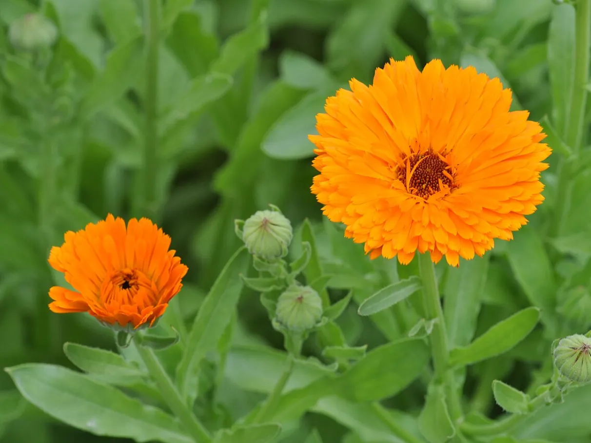

A calêndula é uma planta herbácea conhecida por suas flores de coloração amarelo-alaranjada. É bastante utilizada como planta ornamental devido à sua aparência colorida e pode ser cultivada em jardins e canteiros.
A calêndula é uma boa opção para um jardim botânico pequeno, pois possui tamanho relativamente compacto e suas flores acrescentam cores ao ambiente, tornando os canteiros mais atrativos para os visitantes.
Suas flores também podem fornecer recursos para diferentes insetos polinizadores, contribuindo para a biodiversidade do jardim.
Nome popular: Calêndula
Nome científico: Calendula officinalis
Família: Asteraceae
Tipo: Planta herbácea ornamental
Altura: Aproximadamente 20 a 60 cm
Luminosidade: Sol pleno ou meia-sombra
Solo: Fértil e bem drenado
Floração: Pode ocorrer durante boa parte do ano, dependendo do clima e das condições de cultivo
A calêndula pode contribuir para a biodiversidade do jardim ao oferecer flores que atraem e fornecem recursos para polinizadores. Dessa forma, também pode ser utilizada em atividades de educação ambiental e observação da natureza.
O nome Calendula está relacionado ao calendário, pois a espécie é conhecida por apresentar um período de floração relativamente prolongado em condições favoráveis.